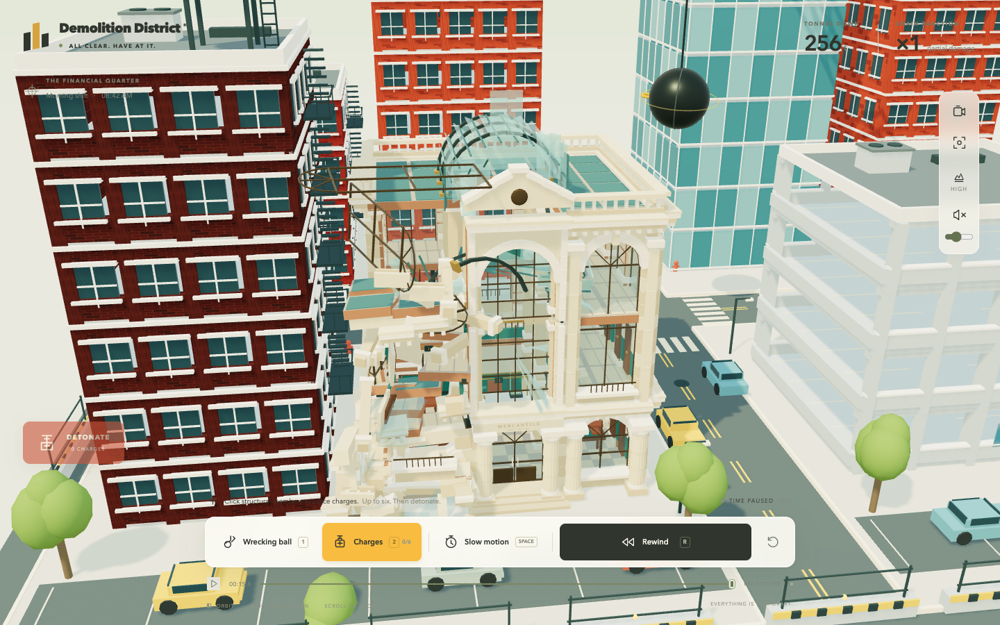
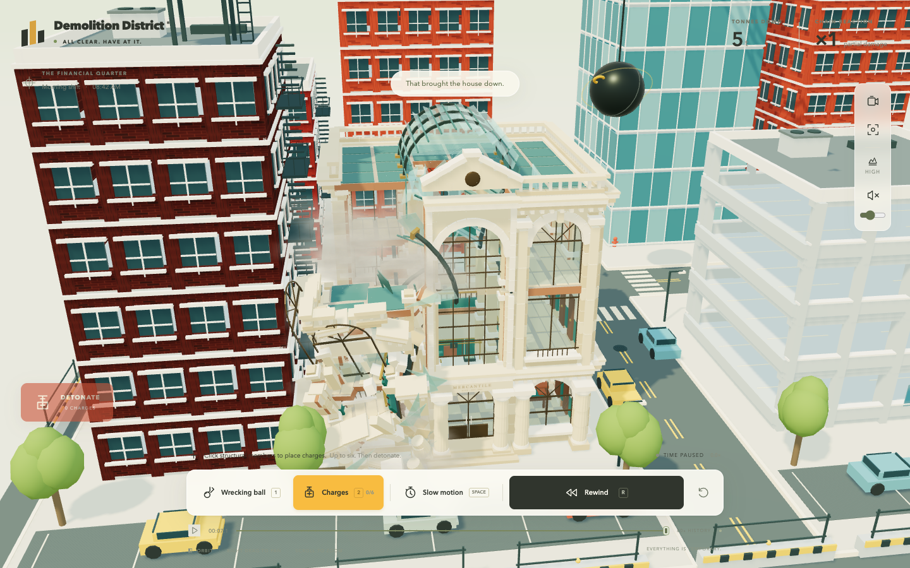
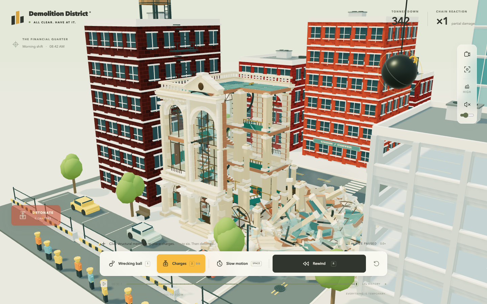
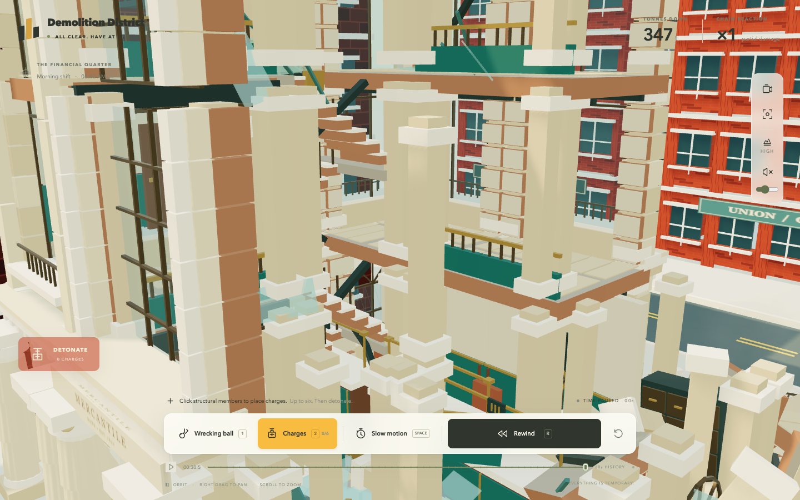

Rejected draft — do not merge. The repair addresses false landing surfaces, but solid rubble still passes through other pieces and can stop there. The full suite and performance acceptance are incomplete.
One low front-left charge
Starting candidate · 98633bf
Current rejected draft · 24055bb
Same normal pointer-accepted anchor, full district. Every captured frame and wall-time timestamp is preserved, including stalls. Starting together does not synchronize simulation progress. Current clips show early collapse only; they do not establish stable partial damage. Muted.

Starting candidate: elevated frame and upright layered debris.

Current draft: early left-corner collapse. This is not a settled-state claim.
Current front and side inputs
Three low front charges
Three right-side charges
The severe slowdown remains visible. These short recordings show different early construction motion; the complete directional aftermath and later interventions remain unverified on this source.
Current side aftermath, beyond 25 simulated seconds

552 pieces marked settled; 264 still loose. Waiting took 651 wall seconds under heavy load.

Close inspection of retained construction. Independent geometry inspection proves two stopped stone columns still overlap; this view alone does not resolve every apparent support.